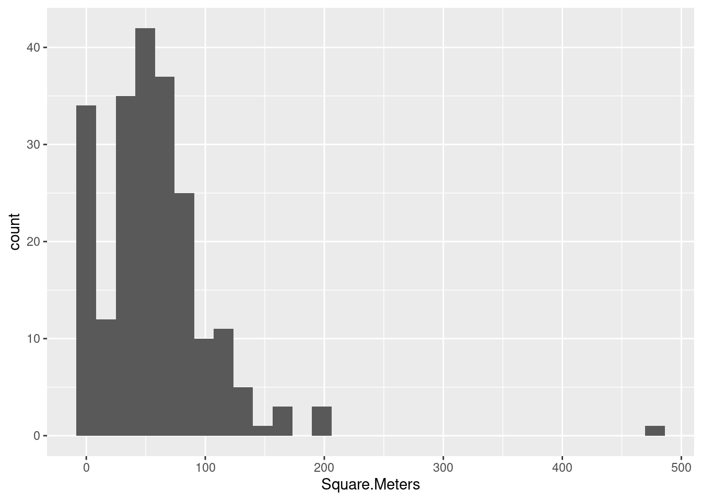
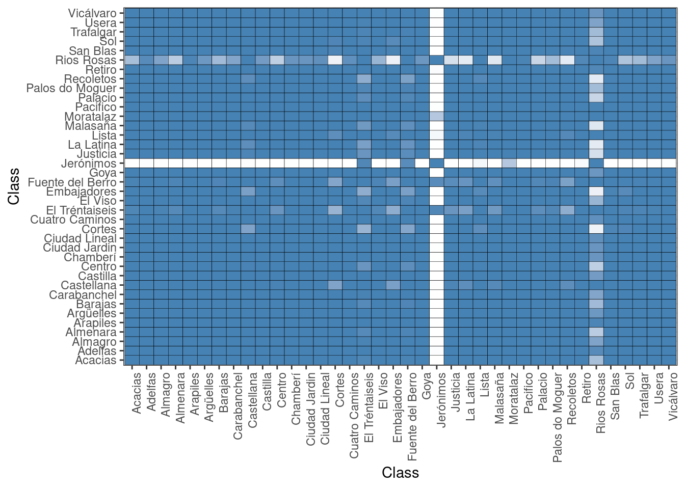
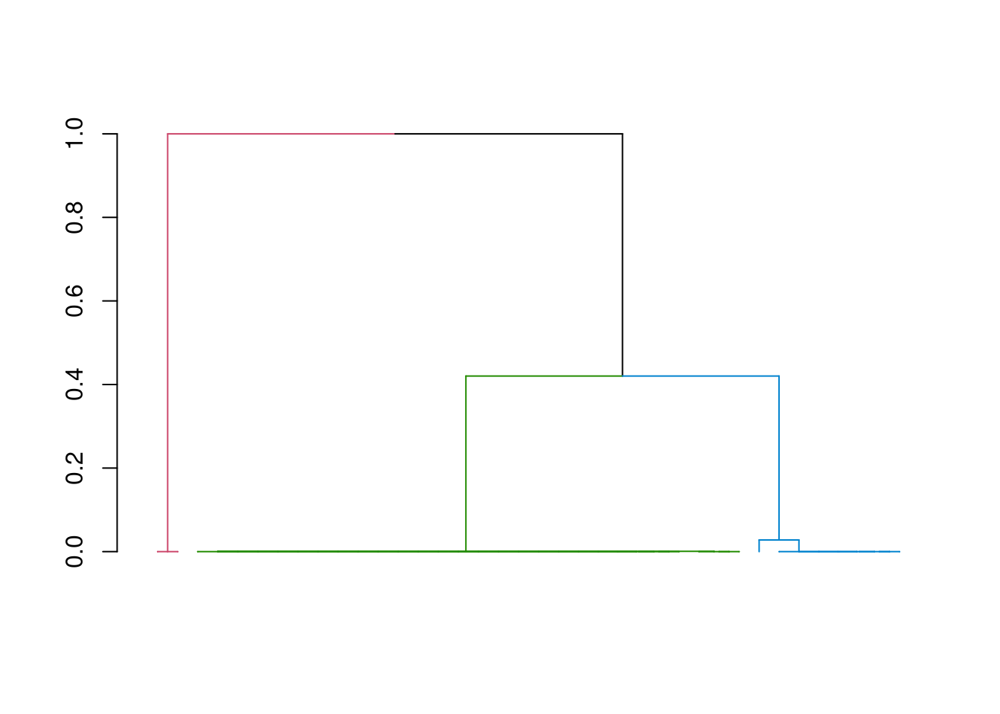
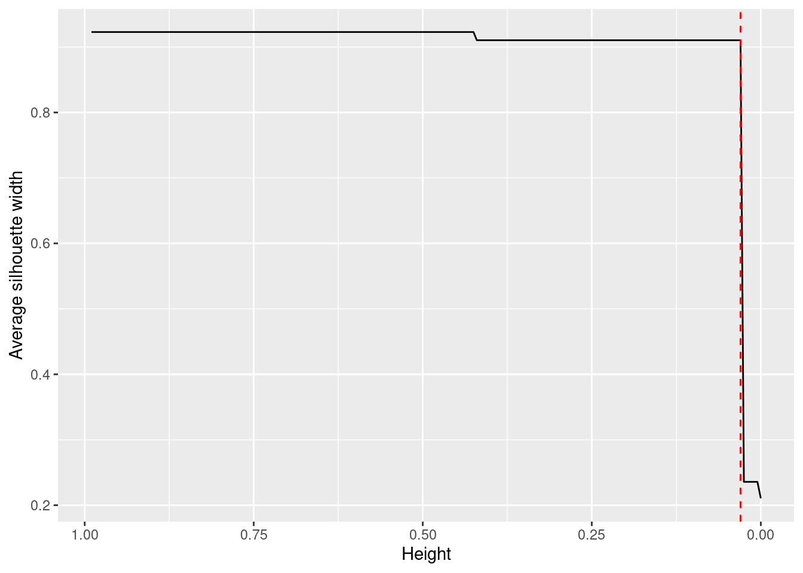
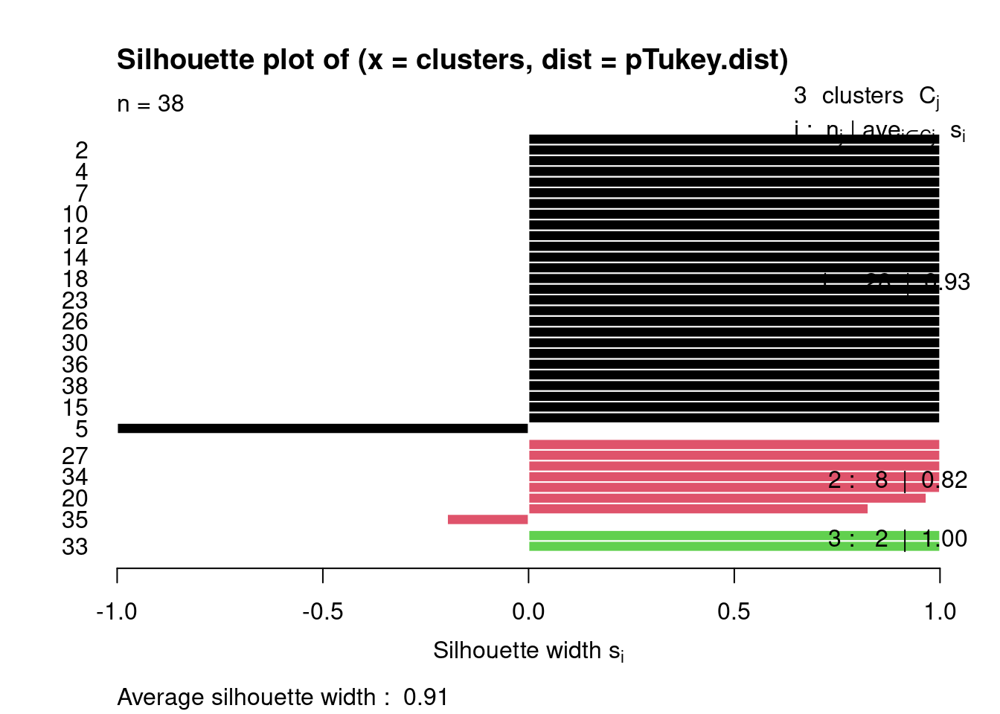
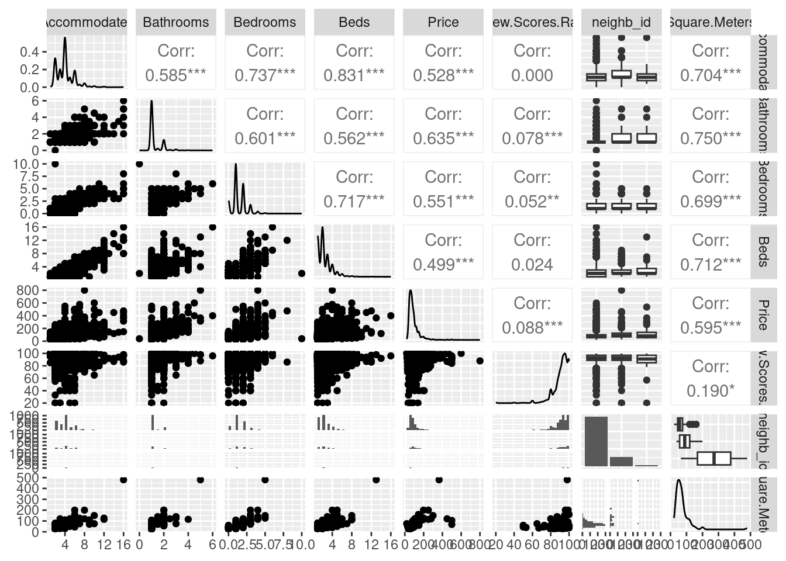
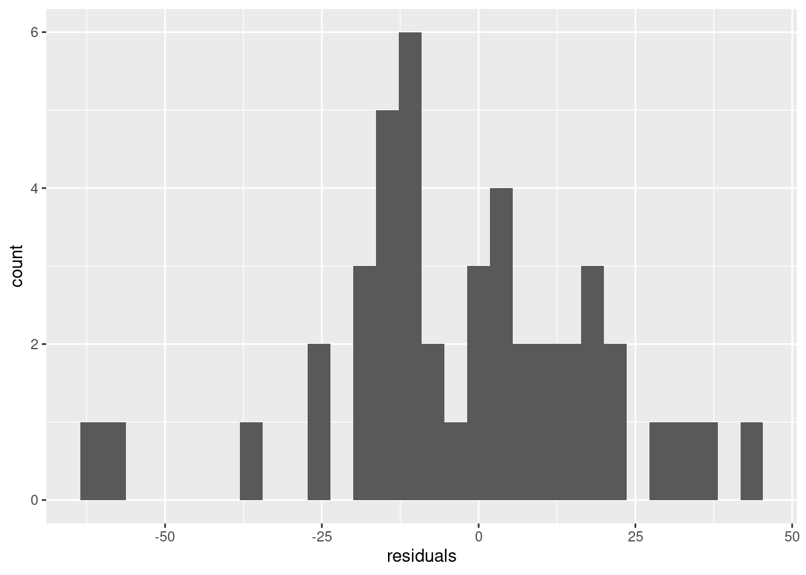
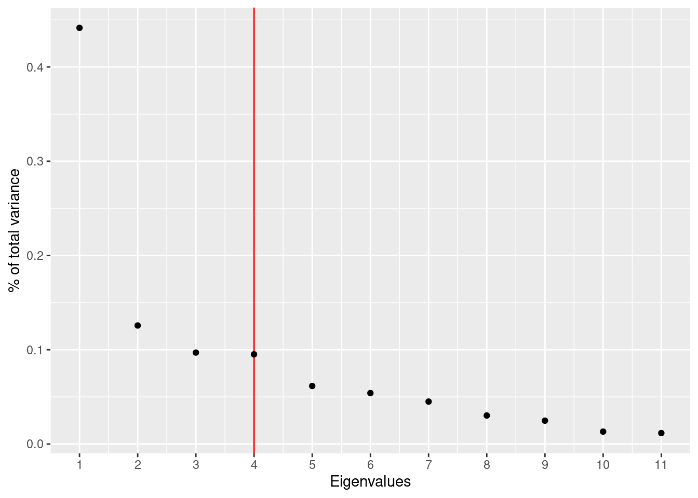

airbnb<-read.csv('./data/airbnb-listings.csv', sep = ';')
options(repr.plot.height = 4, repr.plot.width = 6, repr.plot.res = 300)Vamos a cargar el dataset de AirBnB descargado de aquí

- Vamos a quedarnos con las columnas de mayor interés: ‘City’,‘Room.Type’,‘Neighbourhood’,‘Accommodates’,‘Bathrooms’,‘Bedrooms’,‘Beds’,‘Price’, ‘Square.Feet’,‘Guests.Included’,‘Extra.People’,‘Review.Scores.Rating’,‘Latitude’,‘Longitude’ Nos quedarmos solo con las entradas de Madrid para Room.Type==“Entire home/apt” y cuyo barrio (Neighbourhood) no está vacio ’’ Podemos eliminar las siguientes columnas que ya no son necesarias: “Room.Type”,‘City’ Llama a nuevo dataframe df_madrid.
library(dplyr)
cols <- c("City","Room.Type","Neighbourhood","Accommodates","Bathrooms","Bedrooms","Beds",
"Price","Square.Feet","Guests.Included","Extra.People","Review.Scores.Rating",
"Latitude", "Longitude")
df_madrid <- airbnb |>
select(all_of(cols)) |>
filter(City == "Madrid" & Room.Type=="Entire home/apt" & Neighbourhood != "") |>
select(-c("City", "Room.Type"))- Crea una nueva columna llamada Square.Meters a partir de Square.Feet. Recuerda que un pie cuadrado son 0.092903 metros cuadrados.
m2perft2 <- 0.092903
df_madrid$Square.Meters <- df_madrid$Square.Feet * m2perft2- ¿Qué porcentaje de los apartamentos no muestran los metros cuadrados? Es decir, ¿cuántos tienen NA en Square.Meters?
nas <- sum(is.na(df_madrid$Square.Meters))
pct_nas <- nas / nrow(df_madrid)
print(paste0("NAs: ", nas, " (", round(pct_nas * 100, 2), "%)"))[1] "NAs: 5254 (93.8%)"- De todos los apartamentos que tienen un valor de metros cuadrados diferente de NA ¿Qué porcentaje de los apartamentos tienen 0 metros cuadrados?
zeros <- sum(df_madrid$Square.Meters == 0, na.rm = TRUE)
pct_zeros <- zeros / (nrow(df_madrid) - nas)
print(paste0("0s: ", zeros, " (", round(pct_zeros * 100, 2), "%)"))[1] "0s: 128 (36.89%)"- Reemplazar todos los 0m^2 por NA
df_madrid$Square.Meters[df_madrid$Square.Meters == 0] <- NAHay muchos NAs, vamos a intentar crear un modelo que nos prediga cuantos son los metros cuadrados en función del resto de variables para tratar de rellenar esos NA. Pero antes de crear el modelo vamos a hacer: * pintar el histograma de los metros cuadrados y ver si tenemos que filtrar algún elemento más. * crear una variable sintética nueva basada en la similitud entre barrios que usaremos en nuestro modelo.
- Pinta el histograma de los metros cuadrados y ver si tenemos que filtrar algún elemento más.
library(ggplot2)
ggplot(data=df_madrid, aes(Square.Meters)) +
geom_histogram()
- Asigna el valor NA a la columna Square.Meters de los apartamentos que tengan menos de 20 m^2.
df_madrid$Square.Meters[df_madrid$Square.Meters < 20] <- NA- Existen varios Barrios que todas sus entradas de Square.Meters son NA, vamos a eliminar del dataset todos los pisos que pertenecen a estos barrios.
df_madrid <- df_madrid |>
group_by(Neighbourhood) |>
summarise(Total = n(), NAs = sum(is.na(Square.Meters))) |>
filter(Total > NAs) |>
select(Neighbourhood) |>
inner_join(df_madrid, by = "Neighbourhood")El barrio parece ser un indicador importante para los metros cuadrados de un apartamento.
Vamos a agrupar los barrios por metros cuadrados. Podemos usar una matriz de similaridad de Tukey tal y como hicimos en el curso de estadística:
tky<-TukeyHSD(aov( formula=Square.Meters~Neighbourhood, data=df_madrid ))
tky.result<-data.frame(tky$Neighbourhood)
cn <-sort(unique(df_madrid$Neighbourhood))
resm <- matrix(NA, length(cn),length(cn))
rownames(resm) <- cn
colnames(resm) <- cn
resm[lower.tri(resm) ] <- round(tky.result$p.adj,4)
resm[upper.tri(resm) ] <- t(resm)[upper.tri(resm)]
diag(resm) <- 1
library(ggplot2)
library(reshape2)
dfResm <- melt(resm)
ggplot(dfResm, aes(x=Var1, y=Var2, fill=value))+
geom_tile(colour = "black")+
scale_fill_gradient(low = "white",high = "steelblue")+
ylab("Class")+xlab("Class")+theme_bw()+
theme(axis.text.x = element_text(angle = 90, hjust = 1),legend.position="none")
- Usando como variable de distancia: 1-resm Dibuja un dendrograma de los diferentes barrios.
library(dendextend)
pTukey.dist <- as.dist(1 - resm)
pTukey.tree <- hclust(pTukey.dist, method = "complete")
pTukey.dend <- as.dendrogram(pTukey.tree)
plot(color_branches(pTukey.dend, k = 3), leaflab = "none")
- ¿Qué punto de corte sería el aconsejable?, ¿cuántos clusters aparecen?
library(cluster)
silhouettes <- list()
mean_sil_widths <- c()
cutree_h <- seq(.99, 0, by = -.005)
# Average silhouette width for each height
for (i in seq(length(cutree_h))) {
clusters <- cutree(pTukey.dend, h = cutree_h[i])
silhouettes[[i]] <- silhouette(clusters, pTukey.dist)
mean_sil_widths[i] <- mean(silhouettes[[i]][, "sil_width"])
}
idx <- which.min(diff(mean_sil_widths))
clusters <- cutree(pTukey.dend, h = cutree_h[idx])
n_clusters <- max(clusters)
# Average silhouette width plot
ggplot() +
geom_line(aes(x = cutree_h, y = mean_sil_widths)) +
geom_vline(xintercept = cutree_h[idx], linetype = "dashed", col = "red") +
xlab("Height") +
ylab("Average silhouette width") +
scale_x_reverse()
# Silhouette plot
plot(silhouettes[[idx]], col = 1:n_clusters)
cat(paste("Punto de corte:", cutree_h[idx],
"\nNúmero de clusters:", n_clusters))Punto de corte: 0.03
Número de clusters: 3- Vamos a crear una nueva columna en el dataframe df_madrid con un nuevo identificador marcado por los clusters obtenidos. Esta columna la llamaremos neighb_id.
clusters_df <- data.frame(Neighbourhood = names(clusters),
neighb_id = as.factor(clusters))
df_madrid <- inner_join(df_madrid, clusters_df, by = "Neighbourhood")- Vamos a crear dos grupos, uno test y otro train.
set.seed(31415)
n <- nrow(df_madrid)
test_pct <- .3
test_idx <- sample(seq(n), round(n * test_pct))
train_df <- df_madrid[-test_idx,]
test_df <- df_madrid[test_idx,]- Tratamos de predecir los metros cuadrados en función del resto de columnas del dataframe.
library(GGally)
ggpairs(train_df[, c("Accommodates", "Bathrooms", "Bedrooms", "Beds", "Price",
"Review.Scores.Rating", "neighb_id", "Square.Meters")])
# Review.Score.Rating standardization
m_rating <- mean(train_df$Review.Scores.Rating, na.rm = TRUE)
sd_rating <- sd(train_df$Review.Scores.Rating, na.rm = TRUE)
train_df$Review.Scores.Rating <- (train_df$Review.Scores.Rating - m_rating) / sd_rating# Model specification
model <- lm(train_df, formula=Square.Meters~Accommodates+Bathrooms+Bedrooms+Beds
+Price+exp(Review.Scores.Rating)+neighb_id)
summary(model)
Call:
lm(formula = Square.Meters ~ Accommodates + Bathrooms + Bedrooms +
Beds + Price + exp(Review.Scores.Rating) + neighb_id, data = train_df)
Residuals:
Min 1Q Median 3Q Max
-111.347 -9.702 -1.723 11.049 111.347
Coefficients:
Estimate Std. Error t value Pr(>|t|)
(Intercept) -11.27497 7.72925 -1.459 0.14744
Accommodates 1.76499 2.64995 0.666 0.50675
Bathrooms 19.27892 6.37902 3.022 0.00311 **
Bedrooms 11.41630 4.34929 2.625 0.00988 **
Beds 2.73086 2.80167 0.975 0.33180
Price 0.09549 0.04219 2.263 0.02554 *
exp(Review.Scores.Rating) 9.98519 3.86474 2.584 0.01106 *
neighb_id2 5.28800 6.36979 0.830 0.40821
neighb_id3 106.66089 21.73224 4.908 3.15e-06 ***
---
Signif. codes: 0 '***' 0.001 '**' 0.01 '*' 0.05 '.' 0.1 ' ' 1
Residual standard error: 25.72 on 112 degrees of freedom
(3310 observations deleted due to missingness)
Multiple R-squared: 0.7476, Adjusted R-squared: 0.7296
F-statistic: 41.47 on 8 and 112 DF, p-value: < 2.2e-16test_df$Review.Scores.Rating <- (test_df$Review.Scores.Rating - m_rating) / sd_rating
test_df <- test_df[!(is.na(test_df$Square.Meters)), ]
test_df$pred <- predict(model, test_df)
caret::postResample(test_df$pred, test_df$Square.Meters) RMSE Rsquared MAE
21.5392927 0.7093566 16.7985585 - Mirad el histograma de los residuos sobre el conjunto de test para evaluar la calidad de vuestro modelo.
test_df$residuals <- test_df$Square.Meters - test_df$pred
ggplot(data=test_df, aes(residuals)) +
geom_histogram()
- Si tuvieramos un anuncio de un apartamento para 6 personas (Accommodates), con 1 baño, con un precio de 80€/noche y 3 habitaciones en el barrio de Sol, con 3 camas y un review de 80. ¿Cuántos metros cuadrados tendría? Si tu modelo necesita algúna variable adicional puedes inventartela dentro del rango de valores del dataset. ¿Cómo varía sus metros cuadrados con cada habitación adicional?
newapartment <- data.frame(Accommodates = 6,
Bathrooms = 1,
Bedrooms = 3,
Beds = 3,
Price = 80,
Review.Scores.Rating = (80 - m_rating) / sd_rating,
neighb_id = clusters_df["Sol", "neighb_id"])
cat(paste("Predicción:", round(predict(model, newapartment), 2), "m2",
"\nVariación estimada:", round(model$coefficients["Bedrooms"], 2), "\u00B1", round((confint(model, "Bedrooms")[2] - confint(model, "Bedrooms")[1]) / 2, 2), "m2/habitación"))Predicción: 76.6 m2
Variación estimada: 11.42 ± 8.62 m2/habitación- Rellenar los Square.Meters con valor NA con el estimado con el modelo anterior.
df_madrid_std <- df_madrid |>
mutate(Review.Scores.Rating = (df_madrid$Review.Scores.Rating - m_rating) / sd_rating)
df_madrid$Square.Meters <- ifelse(is.na(df_madrid$Square.Meters),
predict(model, df_madrid_std),
df_madrid$Square.Meters)- Usar PCA para encontrar el apartamento más cercano a uno dado. Este algoritmo nos ayudaría a dado un apartamento que el algoritmo nos devolvería los 5 apartamentos más similares.
Crearemos una función tal que le pasemos un apartamento con los siguientes datos:
* Accommodates * Bathrooms * Bedrooms * Beds * Price * Guests.Included * Extra.People * Review.Scores.Rating * Latitude * Longitude * Square.Meters
y nos devuelva los 5 más similares de:
k_most_similar <- function(apartments_df, newapartment, k = 5) {
apartments_prcomp <- apartments_df |>
select(-c("Neighbourhood", "Square.Feet", "neighb_id")) |>
na.omit() |>
prcomp(center = TRUE, scale. = TRUE)
# Number of principal components (>= 75% of total variance)
n_pc <- which(cumsum((apartments_prcomp$sdev^2 / sum(apartments_prcomp$sdev^2))) >= .75)[1]
# % of total variance by eigenvalue plot
p <- ggplot() +
geom_vline(xintercept = n_pc, col = "red") +
geom_point(aes(x = seq(1, length(apartments_prcomp$sdev)),
y = apartments_prcomp$sdev^2/sum(apartments_prcomp$sdev^2))) +
xlab("Eigenvalues") +
ylab("% of total variance") +
scale_x_continuous(breaks = seq(1, length(apartments_prcomp$sdev)))
print(p)
# Change of basis (rotation): v_rot = v * R
newapartment_rot <- predict(apartments_prcomp, newdata = newapartment)
# Dimensionality reduction: R^{n_pc}
newapartment_pc <- matrix(newapartment_rot[1:n_pc], nrow = 1)
apartments_pc <- apartments_prcomp$x[, 1:n_pc]
# KNN (L^2-Norm)
dist <- rowSums((newapartment_pc[rep(1, times = nrow(apartments_pc)), ] - apartments_pc)^2)
knn <- apartments_df[order(dist)[1:k], ]
return(knn)
}
k_most_similar(df_madrid[!(is.na(df_madrid$Square.Meters)), ], test_df[1,])
# A tibble: 5 × 14
Neighbourhood Accommodates Bathrooms Bedrooms Beds Price Square.Feet
<chr> <int> <dbl> <int> <int> <int> <int>
1 Rios Rosas 2 1 1 1 50 NA
2 Cortes 10 1 3 8 76 0
3 Justicia 4 2 2 3 160 NA
4 Trafalgar 5 2 2 3 90 NA
5 Recoletos 3 1 0 1 98 NA
# ℹ 7 more variables: Guests.Included <int>, Extra.People <int>,
# Review.Scores.Rating <int>, Latitude <dbl>, Longitude <dbl>,
# Square.Meters <dbl>, neighb_id <fct>